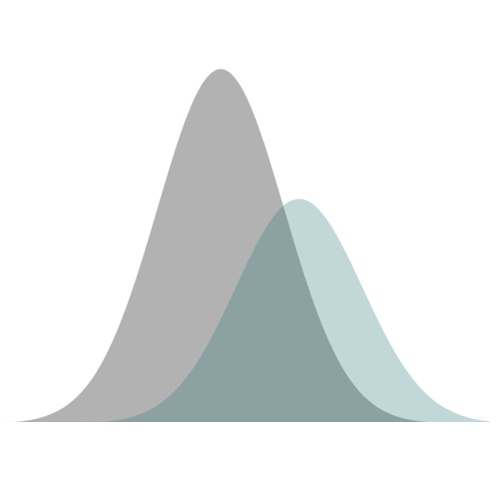

E2P SimulatorE2P Simulator estimates real-world predictive utility of research findings by accounting for measurement reliability and outcome base rates. It is designed to help researchers interpret findings and plan studies across biomedical and behavioral sciences, particularly for individual differences research, biomarker studies, diagnostic tool validation, predictive modeling, and precision medicine/psychiatry.
See Get Started guide for more details.
Developed by Povilas Karvelis
Accuracy: 0.00
Sensitivity: 0.00
Specificity: 0.00
BA: 0.00
PPV: 0.00
NPV: 0.00
F1: 0.00
MCC: 0.00
LR+: 0.00
LR-: 0.00
DOR: 0.00
P(D|+): 0.00
P(D|−): 0.00
G-Mean: 0.00
J: 0.00
Cohen’s κ: 0.00
While the interactive graph above explores a single predictor, here you can estimate the combined effect of multiple predictors and determine how many are needed to achieve a desired level predictive performance. The combined effect is estimated by first computing Mahalanobis D, a multivariate generalization of Cohen's d, which is then directly converted to ROC-AUC, and to PR-AUC by accounting for the base rate. For simplicity, the estimation assumes predictors to have the same effect sizes, uniform collinearity, and no interaction effects.
See Get Started for more details.
Accuracy: 0.00
Sensitivity: 0.00
Specificity: 0.00
BA: 0.00
PPV: 0.00
NPV: 0.00
F1: 0.00
MCC: 0.00
LR+: 0.00
LR-: 0.00
DOR: 0.00
P(D|+): 0.00
P(D|−): 0.00
G-Mean: 0.00
J: 0.00
Cohen’s κ: 0.00
While the interactive graph above explores a single predictor, here you can estimate the combined effect of multiple predictors and determine how many are needed to achieve a desired level of predictive performance. The combined effect is estimated by first computing total variance explained (R²) and then by dichotomizing the data based on the base rate to compute PR-AUC. For simplicity, the model assumes predictors to have the same effect sizes, uniform collinearity, and no interaction effects.
See Get Started for more details.
Determining the right sample size is crucial for developing reliable multivariable prediction models. Too small a sample risks overfitting, unstable estimates, and poor generalizability; too large wastes resources. A common rule of thumb is to ensure a minimum number of events per variable (EPV). However, more principled criteria that are based on desired model performance - such as minimizing overfitting or prediction error - can provide more accurate estimates.
See Get Started for more details.
Models trained and validated on test sets often encounter different conditions when deployed in real-world settings. This module explores how differences in measurement reliability and outcome base rates between test and deployment environments affect model calibration. A well-calibrated model's predicted probabilities should match observed outcome frequencies in the deployment set.